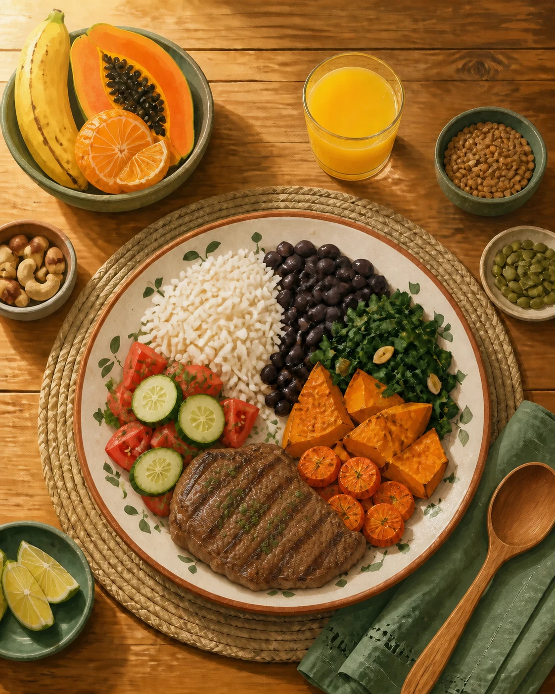
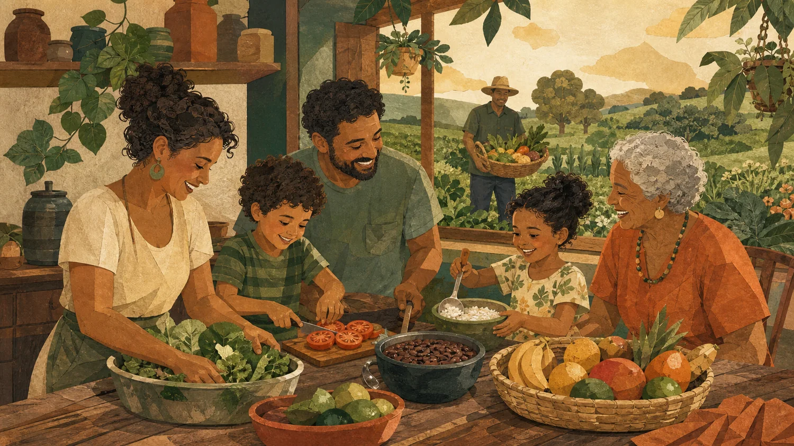

Semeia
SemeiaHoje, na semana e no mês.
Use o tempo para construir variedade. O objetivo não é perfeição em toda refeição, mas uma rotina que se repete com prazer.
Não existe alimento mágico. Variedade, equilíbrio e uma rotina baseada em comida in natura ou minimamente processada ajudam a proteger a saúde ao longo da vida.
Conteúdo educativo. Necessidades mudam conforme idade e condição de saúde; procure orientação profissional quando necessário.Em vez de uma lista impossível, pense em pequenos ritmos que cabem na vida real.

Use o tempo para construir variedade. O objetivo não é perfeição em toda refeição, mas uma rotina que se repete com prazer.
Arroz, feijão, hortaliças, frutas, ovos e preparações caseiras podem formar uma rotina simples e culturalmente próxima.
Referência OMS: 400 g/dia de frutas e verduras após os 10 anos*Alterne folhas, legumes, frutas, feijões ou outras leguminosas e grãos. A diversidade ajuda a oferecer diferentes nutrientes e fibras.
Experimente um alimento da estação, repita o que funcionou e troque gradualmente parte dos ultraprocessados por preparações caseiras.
Uma alimentação saudável ajuda a reduzir o risco de doenças crônicas no conjunto da rotina. Estes alimentos participam desse padrão — nenhum deles age sozinho.
Contribuem com fibras, vitaminas e minerais e ajudam a compor uma alimentação associada a menor risco cardiovascular e de outras doenças crônicas.
Coração e saúde ao longo da vidaSão uma forma prática de ampliar diversidade e fibras. Dê preferência à fruta inteira, variando tipos e cores ao longo da semana.
Diversidade e proteçãoFeijão, lentilha, ervilha e grão-de-bico oferecem fibras e proteína e combinam com refeições brasileiras simples.
Saciedade e intestinoGrãos menos refinados e comida preparada em casa ajudam a reduzir a presença de excesso de sódio, açúcares e gorduras comum em ultraprocessados.
Equilíbrio metabólico
A arte agora respira sozinha. Abaixo dela, três gestos possíveis ajudam crianças e adultos a criar intimidade com a comida de verdade.
O Guia Alimentar para a População Brasileira recomenda fazer de alimentos in natura ou minimamente processados a base da alimentação. A OMS recomenda, para pessoas acima de 10 anos, pelo menos 400 g de frutas e verduras por dia; para crianças menores, as quantidades de referência são diferentes. As associações de saúde se referem ao padrão alimentar, não a alimentos isolados.